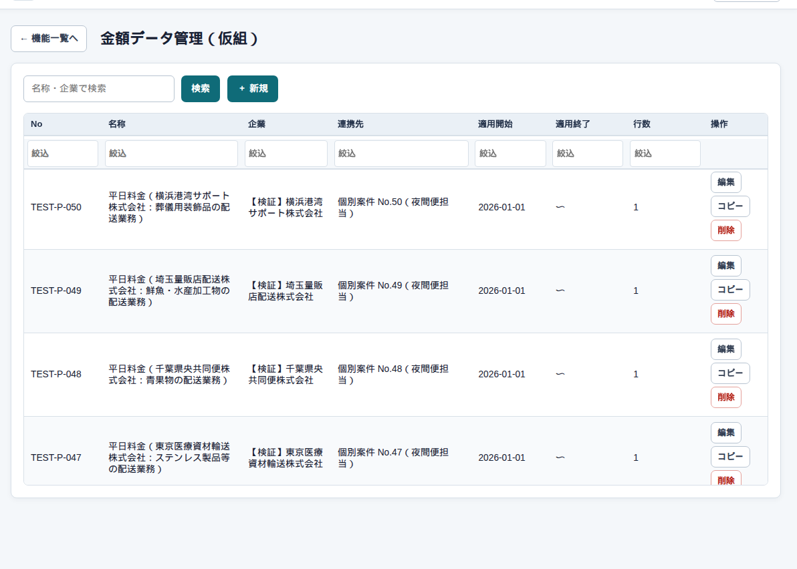
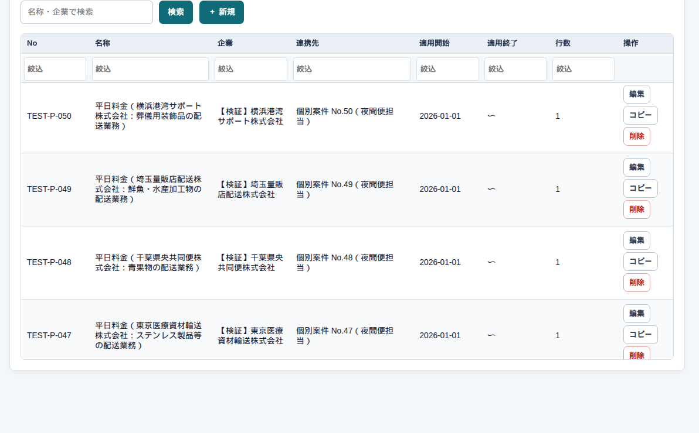

マスタ → 金額データ管理
金額データの一覧
まず、この画面
案件に付ける料金のセットです。日報の自動計算は、ここの単価と計算条件を使います。


詳細を開く
次は 金額データの詳細 です。
気をつけること
日報で一時的に単価を変えても、このマスタは変わりません。逆にマスタを変えても、確認済み・承認済みの日報は変わりません。
マスタ → 金額データ管理
案件に付ける料金のセットです。日報の自動計算は、ここの単価と計算条件を使います。


次は 金額データの詳細 です。